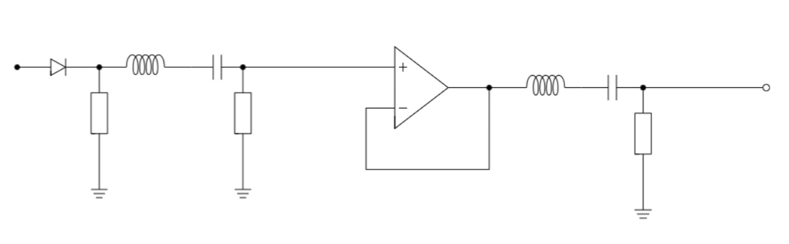
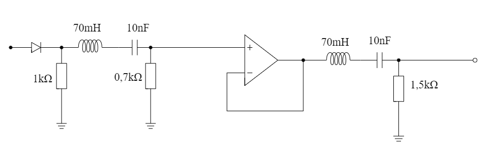
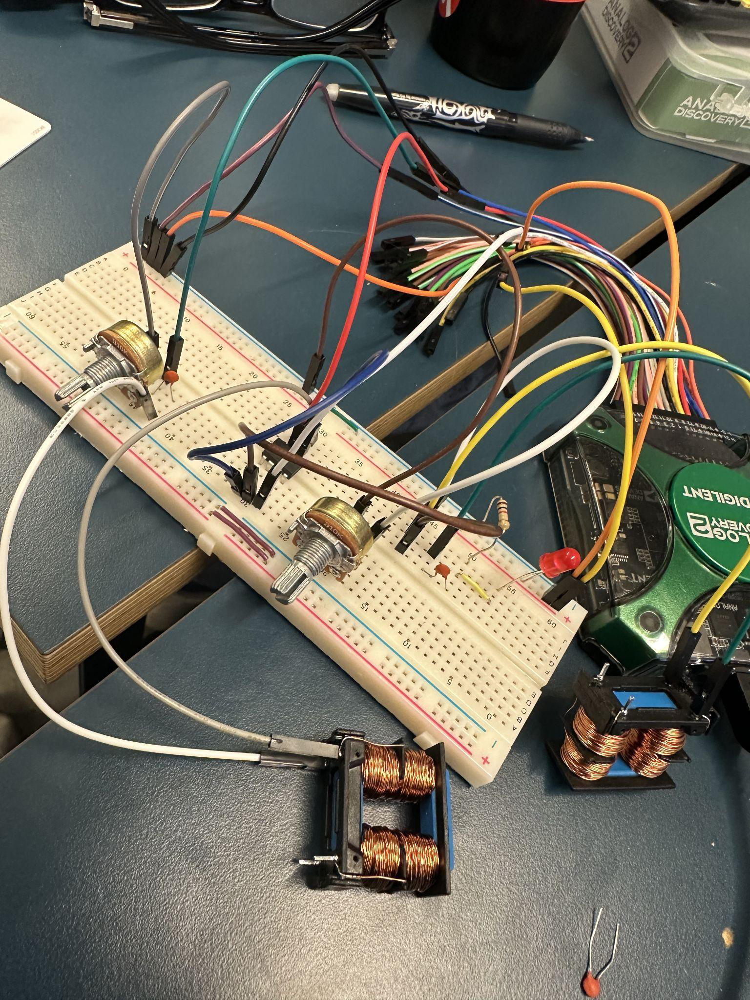
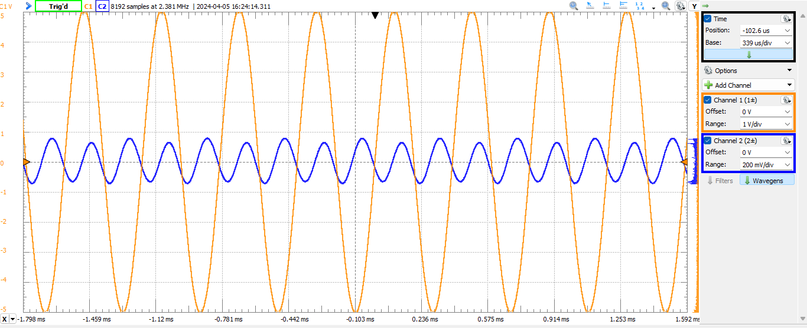
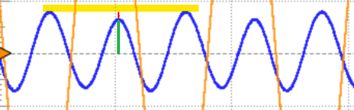
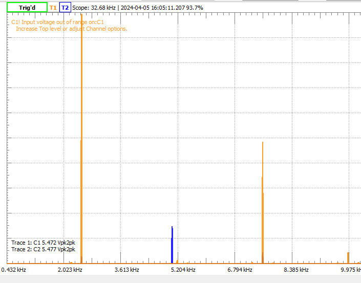

Doubling a frequency, analog
First attempt at an analog frequency doubler. Take x₁(t) = cos(2πft)
in, get a clean x₂(t) = k·cos(2π·2f·t + φ) out, using only the kind
of passives a student has lying around. Built around a diode for the non-linearity
plus two cascaded band-pass filters with an op-amp buffer in between.
The idea
- Non-linearity. Push the input through a diode. The diode's
non-linear V-I curve generates harmonics, including the one we want at
2f. - Band-pass 1. Isolate the
2fcomponent out of the harmonic soup. - Buffer. An op-amp follower so the two filters do not load each other.
- Band-pass 2. A second pass tightens the spectrum further.

The numbers
- Input: 2525 Hz, target output: 5050 Hz.
- Available inductors measured at ~70 mH, which fixed the capacitor target.
For
2π·5050·√(LC) = 1withL = 70 mH:C ≈ 14 nF. I used pairs of 10 nF. - Resistors were tuned in with a potentiometer, then frozen.
- Measured SDR after tuning: ~21.4 dB. Every other half-cycle came out 12–13% short of the others, visible in the scope trace and audible in the spectrum.


Outcome
A clear, identifiable 2f sinusoid. Visibly imperfect at the half-cycle level, but unmistakably doubled. Closing the gap to 25 dB SDR would require trimming the per-half-cycle amplitude error below ~7%, which probably needs better matched components and a more symmetric non-linearity than a single diode. Improving on that is what Freq doubler v2 was about.


